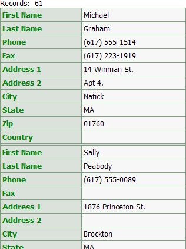
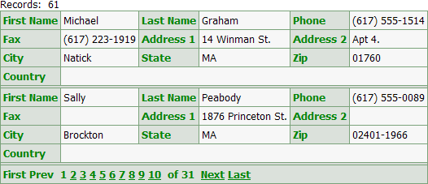

Using the Number of "Layout" Columns Feature
When designing a grid component with columnar formatting or a dialog component, you may change the Layout Options > Number of "Layout" Columns property.
For example, this column grid shows the default behavior, where the Layout Options > Number of "Layout" Columns property is set to 1.

Here the Layout Options > Number of "Layout" Columns property is set to 2.
Here the Layout Options > Number of "Layout" Columns property is set to 3. Note how the controls wrap from left to right, then top to bottom.

After the Layout Options > Number of "Layout" Columns property is set to a value greater than 1, you can further position the controls using:
Breaks - a break before or after a control forces the start of a new row
Frames - a frame groups fields together inside a box, which may occupy one or more columns
Colspan - the colspan value specifies the number of layout columns a control should use
Column Spacers - a column spacer inserts a blank column after a control
Row Spacers - a row spacer inserts a blank row after a control
Merges - a merge groups adjacent controls together, so that they use a single common heading label
See Also
Limitations
Web publishing applications only.